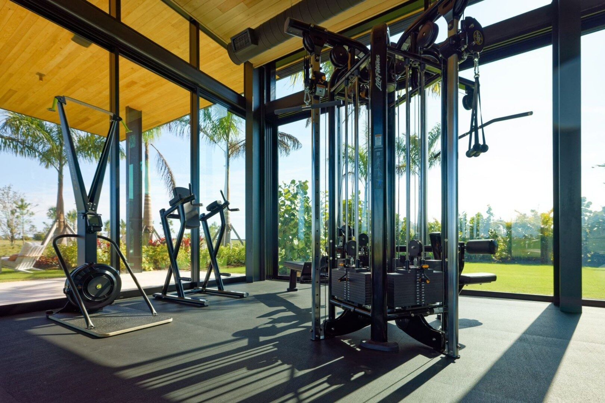

Florida has clear licensing rules for commercial contractors, and glazing is not a gray area. Any contractor performing commercial glazing work — storefront, curtainwall, impact windows, entrance systems — on a building that is not a one- or two-family residence needs a Certified General Contractor (CGC) or Certified Building Contractor (CBC) license issued by the Florida Department of Business and Professional Regulation (DBPR). This is not a trade license. It is not a business tax receipt. It is not a county competency card. And verifying it before you award a Division 08 scope takes less than a minute. Here's what GCs, owners, developers, and architects need to check, and why the verification matters more than it looks.

What CGC Actually Means in Florida
The Florida Construction Industry Licensing Board (CILB) recognizes several statewide commercial license classes under Florida Statute 489.105. For commercial glazing work, the two that matter are:
- Certified General Contractor (CGC) — unlimited scope on any building type, any height, any occupancy. This is the broadest commercial license.
- Certified Building Contractor (CBC) — commercial work on buildings up to three stories in certain conditions; slightly narrower than CGC but covers most Division 08 scopes.
Both are issued by DBPR after the individual qualifier passes the Florida State Construction Examination and documents four years of verifiable construction experience. Both allow the license holder's company to pull permits statewide, contract directly with owners and GCs, and take Division 08 subcontracts on commercial projects.
ACG holds CGC1531993. That license is current, statewide, and verifiable at myfloridalicense.com in under 60 seconds.
Why CGC ≠ RC (Registered Contractor)
Florida also issues Registered Contractor (RC) licenses through individual counties. An RC license allows a contractor to operate within a specific county only, based on that county's Certificate of Competency (CC) examination — which varies in rigor from county to county. An RC is not a statewide license and does not convey authority to pull permits outside of their registered county.
For commercial glazing, this distinction matters in two specific situations:
- Projects that cross county lines. If the glazing sub is RC-licensed in Palm Beach County and the project is in Martin or Broward, they can't pull the permit. You either have to find a second sub or wait for them to register in the new county.
- Projects in HVHZ counties. Miami-Dade and Broward county RCs are common for residential impact window work. Many of them are not qualified for commercial glazing under their county's trade definition. A CGC avoids that ambiguity entirely.
For any commercial glazing scope, ask for a CGC or CBC license number. If you get an RC number, ask what county issued it and whether the contractor is licensed in the project's county. If the sub can't answer cleanly, move on.
How to Verify a License
Verification takes one minute at myfloridalicense.com. The steps:
- Navigate to the DBPR licensee search tool
- Search by license number or business name
- Confirm the license is current and active — not expired, not suspended, not delinquent
- Confirm the license class (CGC, CBC, RC) matches what the sub represented
- Check the "Disciplinary Actions" section for any recorded complaints or orders
- Verify the "Qualifying Agent" — this is the licensed individual whose credentials cover the company. If the qualifier has departed the company, the license is in jeopardy.
Do this on every Division 08 bid before you consider the number. It takes less time than reading the first page of a proposal.
Insurance and Bonding — What to Ask For
License verification is the baseline. Insurance and bondability are the next layer. For a commercial glazing sub operating in Florida, the minimum acceptable documentation is:
- General Liability: $1M per occurrence / $2M aggregate, with the GC and owner named as additional insureds on a primary, non-contributory basis
- Workers Compensation: In force with statutory limits (Florida does not allow most glazing contractors to exempt out — the trade has too much injury exposure)
- Auto Liability: $1M CSL minimum, including hired and non-owned coverage for subcontractor vehicles
- Umbrella: $2M to $5M on commercial scopes over $500K
- Bondability: For projects requiring performance and payment bonds, confirm the sub carries a surety relationship and document the current available line
Ask for COIs naming your entity as additional insured before the first dollar of work is performed. If the sub can't produce those inside 48 hours of award, you're going to have documentation problems throughout the project.
Red Flags — The Signs of an Unlicensed or Under-Licensed Operation
Four consistent patterns show up in commercial glazing bids that don't hold up at the licensing level. Any one of these is worth a hard look. Two of them should end the conversation.
1. No License Number on Website or Proposal
Licensed Florida contractors are required to display their license number on advertising, proposals, and contracts. A glazing company whose website, proposal, and email signature all lack a visible license number is telegraphing something. The contractor may be operating as a tax-ID business without an actual license, subbing the licensed work to another party, or using a license that isn't theirs. Any of those scenarios creates real exposure for the GC of record.
2. No General Liability Certificate
A sub who cannot produce a GL certificate of insurance within a business day isn't insured, or the insurance is at a level that embarrasses them. Either way, if they injure someone on your project, you are the next named defendant.
3. Expired NOA or FL Product Approval References
Miami-Dade NOAs and Florida Product Approvals expire. Products referenced on a bid that are no longer approved will fail permit review. A glazing sub who hasn't verified the current status of the products on their proposal hasn't done the homework — and probably won't do it on your project either.
4. Residential-Focused Marketing
A contractor whose website is dominated by photos of single-family homes, hurricane shutters, and "free estimate" language aimed at homeowners is operating in a fundamentally different business than commercial glazing. Their license may be technically valid, but the operational infrastructure — submittals, shop drawings, NOA documentation, GC-coordinated scheduling — usually isn't there. A subtle counterpoint: if the company's pinned projects are all residential, the commercial work is a sideline, and the schedule risk is real.
Why This Matters More in Florida
Florida has more commercial glazing activity than any state outside California and Texas, and it also has the most demanding product approval regime in the country. Miami-Dade NOAs, Florida Product Approvals, HVHZ testing standards, and the documentation chain from manufacturer to installer to building department are all pieces of paper that have to move through a licensed, qualified contractor's hands to hold up. An unlicensed or under-credentialed operation creates documentation gaps that surface during closeout, warranty, or the first meaningful hurricane.
The license is how the state signals that the contractor has demonstrated basic competency. The insurance is how the market signals the contractor has skin in the game. Together, they are the minimum filter before you even look at the proposal number.
What ACG Brings
ACG is a CGC-licensed Florida commercial glazing subcontractor (CGC1531993) with offices in West Palm Beach, Naples, and Tampa. We carry $2M GL / $5M umbrella, current workers comp, and surety capacity for projects requiring performance bonds. We're factory-authorized for the major Florida commercial glazing product lines and our NOA documentation is delivered as a standard bid package component. Look at the portfolio, including work at Panther National Clubhouse, to see the scale and type of commercial work we execute.
Ready to get started?
If you're evaluating glazing subs for a commercial project, start with license verification. Then send us plans. We'll return a licensed, insured, NOA-backed bid inside 48 hours.